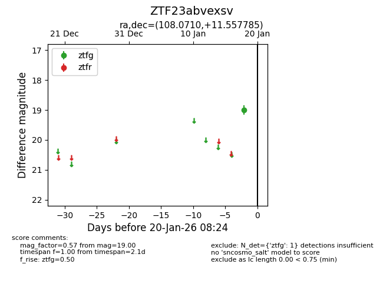
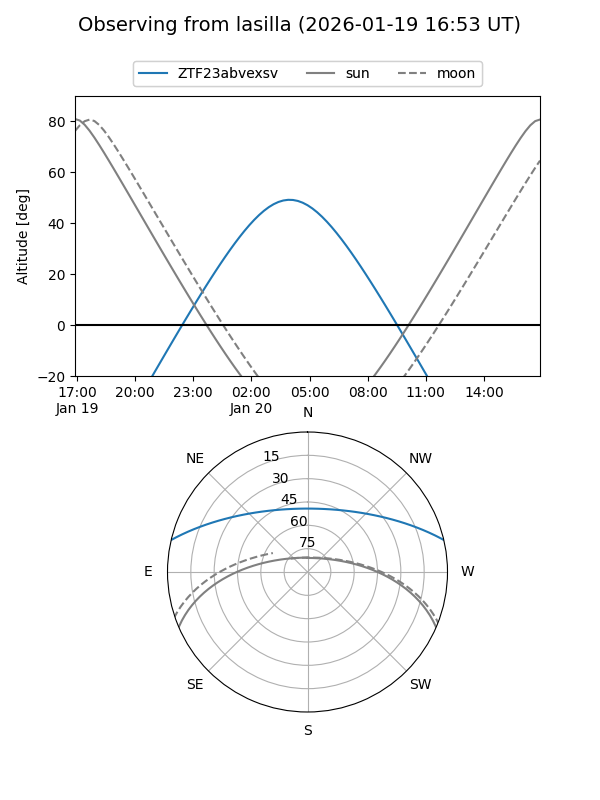
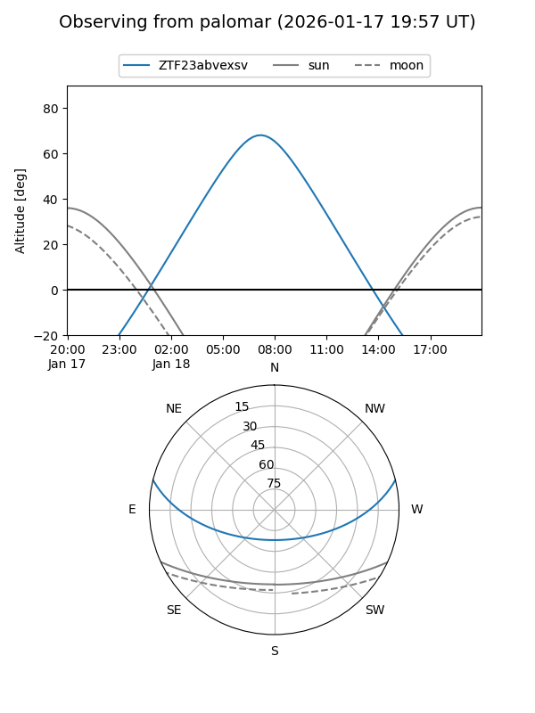

ZTF23abvexsv
Target ZTF23abvexsv at 2026-01-20 08:26
Aliases and brokers:
FINK: link
Lasair: link
ALeRCE: link
alt names
ZTF23abvexsv (ztf,fink_ztf)
Coordinates:
equatorial (ra, dec) = 108.0710,+11.55778
equatorial (HMS+DMS) = 07:12:17.05,+11:33:28.02
galactic (l, b) = (204.8966,+9.82041)
Flags:
Photometry:
last ztfg=19.00
1 ztfg detections
Lightcurve

Visibility


Additional plots